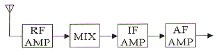
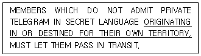
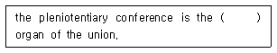
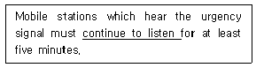
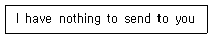
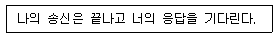
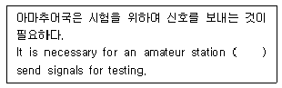
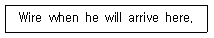
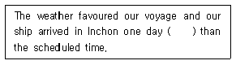
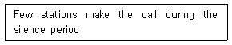

전파전자통신기능사 (2015-03-07 기출문제)
1과목: 임의 구분
1. AM 변조에서 반송파의 진폭이 100[V] 이고, 신호파의 진폭이 75[V]일때 변조도는 몇 [M]인가?
- 0.14
- 0.25
- 0.43
- 0.75
(정답률: 82%)

2. 다음 중 슈퍼헤테로다인 수신기의 특징이 아닌 것은?
- 수신기의 감도가 좋다
- 선택도가 좋다
- 충실도가 높다
- 주파수 변환에 따른 혼신방해와 잡음이 없다
(정답률: 73%)
3. DSB와 비교할 때 SSB의 장점에 속하지 않는 것은?
- 송신기의 소비전력이 적다.
- 점유주차수대폭의 반으로 축소된다.
- 송신기와 수신기의 구성이 간단하고 쉽다.
- 적은 송신전력으로 양질의 통신이 가능하다.
(정답률: 61%)
4. 어떤 전송시스템에서 코드효율이 1이고, 전체효율이 0.8일 때 전송효율은?
- 1.8
- 1
- 0.8
- 0.2
(정답률: 90%)
5. 선박용 레이더에서 해면반사를 제거하기 위하여 사용하는 것은?
- FTC
- STC
- AFC
- AGC.
(정답률: 80%)
6. 다음 중 선박의 단파통신에 주로 이용되는 전리층은?
- D층
- E층
- Es층
- F층
(정답률: 85%)
7. 최적사용주파수(FOT)를 바르게 나타낸 것은? (단, LUF는 최저사용주파수, MUF는 최고사용주파수이다)
- FOT = MUF
- FOT = LUF
- FOT = MUF x 0.85
- FOT = LUF X 0.85
(정답률: 91%)
8. 다음 중 직선 도체형 공중선에 해당되지 않는 것은?
- 루프 안테나
- 수직접지 안테나
- 다이폴 안테나
- 헤르츠 안테나
(정답률: 66%)
9. 주파수 6 [MHz] 인 반파장 다이폴 안테나의 길이는 약 얼마인가?
- 25 [m]
- 50 [m]
- 100 [m]
- 200 [m]
(정답률: 50%)
10. 선로의 특성 임피던스가 5 [Ω], 부하 임피던스가 10 [Ω]인 선로에 정재파비는 얼마인가?
- 0.5
- 1
- 1.5
- 2
(정답률: 68%)
11. 다음 중 마이크로파(SHF) 대역에서 가장 적합한 통신업무는?
- 위성통신
- 이동통신
- 잠수함 통신
- 아마추아 무선통신
(정답률: 65%)
12. 다음의 위성통신시스템 중 정지위성을 이용하지 않는 시스템은?
- 인텔셋
- 인마셋
- GPS
- 무궁화위성
(정답률: 67%)
13. 다음 중 위성통신에 대한 설명으로, 적합하지 않는 것은?
- 주로 초단파를 사용한다
- 대용량의 통신 및 다원 접속이 가능하다.
- 지리적 여건에 관계없이 회선설정이 용이하다
- 보안유지를 위한 특별한 암호장치가 필요하다.
(정답률: 75%)
14. 다음 중 위성통신 수신 증폭기에서 저잡음 증폭기로 사용되는 것은?
- Gacode
- Maser
- Magnetron
- GaAs FET
(정답률: 67%)
15. 하나의 트랜스폰더를 여러 지구국이 공유할 수 있도록 주파수 대역폭을 분할하여 서로 간섭 없이 통신을 할 수 있게 하는 방식은?
- 시분할 다원 접속 방식
- 부호 분할 다원 접속 방식
- 파장 분할 다원 접속 방식
- 주파수 분할 다원 접속 방식
(정답률: 75%)
16. 다음 그림과 같은 어떤 수신기의 고주파 증폭 이득이 20[dB], 주파수 변환 이득이 -5[dB], 중간주파 이득이 60[dB], 저주파 이득이 25[dB]라면 입력에 1[㎶]의 전압을 가하면 출력은 몇[V]인가?

- 0.01 [V]
- 0.1 [V]
- 0.5 [V]
- 1 [V]
(정답률: 64%)
17. 다음 중 ‘잡음지수’에 대한 설명으로 적합하지 않는 것은?
- 무잡음, 이상 증폭기의 잡음지수(NF)는 1 이다.
- 실제의 증폭기 잡음지수(NF)는 1 보다 크다.
- 잡음지수(NF)는 증폭기의 입출력단에서 NF = 입력신호대 잡음비 / 출력신호대 잡음비로 나타낸다.
- 다단 증폭기의 혼합 잡음지수(NF)는 각 단의 잡음지수의 합이다.
(정답률: 65%)
18. 다음 중 도파관 전송의 장점이 아닌 것은?
- 저항체 손실이 적다.
- 유전체 손실이 적다.
- 저역 필터의 기능이 있다.
- 방사 손실이 적다.
(정답률: 76%)
19. 어떤 정류기의 출력 파형에 포함된 교류성분의 실효갑이 20[V]이고, 직류성분의 평균갑이 200[V]라면 맥동률은 얼마인가?
- 5%
- 10%
- 20%
- 30%
(정답률: 84%)
20. 방전전류가 20[A]이고, 방전시간이 12시간(h)인 축전지의 용량은?
- 100[Ah]
- 120[Ah]
- 240[Ah]
- 480[Ah]
(정답률: 86%)
2과목: 임의 구분
21. 다음 문장의 밑줄 친 부분의 우리말 번역으로 적합한 것은?

- 자국의 영역에서 발하거나 자국의 영역으로 도착하는
- 자국의 영역으로부터 발생되거나 소멸된
- 2자국의 영토 확장을위하여 기원되거나 정하여진
- 자국의 영토로 항해 출발하거나 그것이 예정된
(정답률: 58%)
22. 다음 중 “국제전기통신연합협약”을 영어로 가장 잘 표현한 것은?
- The International Communication Union
- The International Radio Regulation
- Convention of the International Telecommunication Union
- The International Telecommunication Law
(정답률: 73%)
23. 다음 중 ITU 전기통신 개발 부분의 주요 기능이 아닌 것은?
- 개발 도상국들의 전기통신망과 서비스의 발전, 확장, 운영을 촉진
- 개발 도상국들의 전기통신 개발에 산업계의 참여 및 적정한 기술 이정
- 전기통신 서비스 제공을 위한 개발사업 촉진을 목적으로 통신망 종합계획 수립
- 전기통신 표준화 분야에 대한 우선 순위 및 전략 검토
(정답률: 58%)
24. 다음 문장의 괄호 안에 가장 적합한 것은?

- top system
- structure
- supreme
- council
(정답률: 79%)
25. 다음 문장의 밑줄 친 부분과 동의어로 가장 적합한 것은?

- keep watch
- keep down
- keep in
- keep off
(정답률: 85%)
26. Are you troubled by static ( )에 대하여 공전의 방해를 조금 받는 다고 응답하고자 한다, 다음 괄호 안에 들어갈 적당한 단어는?
- no
- slightly
- nothing
- highly
(정답률: 88%)
27. Which area is that within the coverage of an INMARSAT geostationary satellite in which continuous alerting is available?
- Sea area A0
- Sea area A1
- Sea area A2
- Sea area A3
(정답률: 53%)
28. 다음 중 ‘notify’의 뜻이 같은 것은?
- Form
- inform
- conform
- perform
(정답률: 76%)
29. 다음 뜻의 약어는?

- NIL
- NO
- NW
- OL
(정답률: 83%)
30. 음 중 용어의 뜻이 서로 맞지 않는 것은?
- urgency signal : 긴급신호
- ordinary telegram: 개인전보
- distress traffic: 조난통신
- public correspondence : 공중통신
(정답률: 65%)
31. "수신 중, 너의 최종의 송신을 완전히 수신하고 이해하였다.“를 표시하는 절차 용어는?
- OUT
- ROGER
- OVER
- ACKNOWLEDGE
(정답률: 80%)
32. 다음 중 전송할 숫자의 발음이 음성통화표에 맞게 되어있지 않는 것은?
- 9 : NO-VAY-NINER
- 0 : NAR-SOH-ZAY-ROH
- 4 : KAR-TAY-FOWER
- 8 : OK-TOH-AIT
(정답률: 70%)
33. 다음 내용을 나타내는 무선전화 용어는 무엇인가?

- OUT
- WAIT
- OVER
- ROGER
(정답률: 85%)
34. 다음 문장을 영역할 경우 괄호 안에 들어갈 적당한 단어는?

- as
- to
- for
- of
(정답률: 78%)
35. 다음 중 대서양에 위치하고 있는 기상모사(Facsimile) 방송국은?
- Halifax Radio
- Bahrain Radio (A9M)
- Sangley Point(NPO)
- San Franscico Radio
(정답률: 70%)
36. .Willy Willy는 어느 해역에서 발생하는 열대성 저기압인가?
- 대양주
- 인도양
- 태평양
- 대서양
(정답률: 64%)
37. Choose the incorrect meaning in the following examples.
- Stand by - 잠시 기다리시오.
- In figures - 다음은 아라비아 숫자이다.
- Wait out - 대기 상태를 종료하시오.
- Say again - 반복하여 주시오.
(정답률: 73%)
38. 다음 보통문을 전문으로 가장 적합하게 작성한 것은?

- WHEN WIRE ARRIVING HERE.
- WIRE WHEN ARRIVING HERE.
- WIRE ARRIVING WHEN HERE.
- WHEN ARRIVING WIRE HERE.
(정답률: 62%)
39. 다음 문장의 괄호 안에 가장 알맞은 것은?

- fastest
- late
- earlier
- quick
(정답률: 81%)
40. 다음 문장의 국역으로 가장 적합한 것은?

- 침묵시간 중에 호출하는 무선국은 거의 없다.
- 침묵시간 중에는 호출당하는 무선국은 전혀 없다.
- 많은 무선국은 침묵시간 중에 호출을 한다.
- 침묵시간 중에 몇 개의 무선국으로부터 호출하도록 하였다.
(정답률: 66%)
3과목: 임의 구분
41. 다음 중 전파법에 관한 설명으로 옳지 않은 것은?
- 전파법은 우리나라의 전파행정의 기본이 되는 법률이다.
- 전파의 효율적인 이용 및 관리를 통해 전파의 진흥을 도모한다.
- 공공의 복리 증진이 그 목적이다.
- 전파법에서 정하는 모든 사항은 전파관리소에서 주관한다.
(정답률: 56%)
42. 주어진 발사종별의 전파에 대하여 특정한 조건하에서 사용되는 통신방식에 필요한 전송 속도와 품질로 정보를 전송하는데 충분한 주파수대폭을 무엇이라 하는가?
- 점유주파수대폭
- 스퓨리어스대폭
- 필요주파수대폭
- 특성주파수대폭
(정답률: 88%)
43. 전파법에서 정의하는 “특정한 주파수의 용도를 미래창조과학부장관이 정하는 것”을 무엇이라고 하는가?
- 주파수 분배
- 주파수 할당
- 주파수 회수
- 주파수 배정
(정답률: 75%)
44. 선박국이 항행 중에 긴급한 상황이 발생하여 긴급호출을 하고자 할 때 누구의 명령에 따라 행하여야 하는가?
- 선박의 통신사
- 선박의 책임자
- 선박의 선주
- 선박관할의 해안국 당무자
(정답률: 84%)
45. 선박에서 조난이 발생하여 조난호출에 이어 조난통보를 송신하고자 한다. 다음 중 조난통보에 반드시 포함해야 하는 사항이 아닌 것은?
- 조난선박의 명칭
- 조난발생의 원인
- 조난선박의 경도 및 위도
- 필요로 하는 구조의 종류
(정답률: 77%)
46. 다음 중 무선설비의 효율적 이용과 관련 없는 것은?
- 무선설비 공동사용
- 무선설비 위탁운용
- 무선설비 임대운용
- 무선설비 독립운용
(정답률: 75%)
47. 다음 중 관계법령에 따라 전파법에 준하는 전자파 장해 및 전자파로부터 보호에 관한 적합성평가를 받은 경우 적합성평가의 일부를 면제할 수 있는 사항에 해당되지 않는 것은?
- 산업표준화법 제15조에 따라 인증을 받은 품목
- 품질경영 및 공산품안전관리법에 따라 안전인증을 받은 공산품
- 자동차관리법에 따라 자기인증을 한 자동차
- 중요질병의 치료에 사용되는 의료기기
(정답률: 76%)
48. 다음 중 적합성평가를 받아야 하는 무선설비의 기기에 해당되지 않는 것은?
- 선박에 설치하는 경보자동수신기
- 선박에 설치하는 레이더 기기
- 선박국용 무선방위 측정기
- 선박에 설치하는 어군탐지기
(정답률: 86%)
49. 다음 중 전파법에 따른 방송통신기자재 등의 적합성평가에 해당하지 않는 것은?
- 적합인증
- 형식인증
- 잠정인증
- 적합등록
(정답률: 50%)
50. 다음 중 방송통신기자재의 적합인증서를 신청인에게 교부하고, 관보에 공고할 때 공고하는 항목에 해당되지 않는 것은?
- 제조자 및 제조국가
- 인증번호
- 인증유효기간
- 인증연월일
(정답률: 81%)
51. 다음 중 무선국 개설허가의 효력이 상실되는 경우 옳지 않은 것은?
- 시설자가 대한민국의 국적을 상실한 경우
- 주파수할당이 취소된 경우
- 주파수 할당을 받지 못한 경우
- 정당한 사유없이 계속하여 3개월 이상 무선국의 운용을 휴지한 경우
(정답률: 64%)
52. 다음중 1년 이상 15년 이항의 징역에 처하는 벌칙에 해당하는 자는?
- 긴급통신의 명령을 받고 지체없이 이를 발신하지 아니한 자
- 조난통신의 조치를 하지 아니한 자
- 국가기관을 폭력으로 파괴할 것을 주장하는 통신을 한 자
- 조난통신의 조치를 방해한 자
(정답률: 56%)
53. 국제전기통신연합(ITU)의 목적에 해당하지 않는 것은?(2011.2)
- 모든 세계 주민에게 새로운 전기통신기술의 이용확장을 촉진한다.
- 전기통신의 개선과 합리적 이용을 위하여 전 회원국간의 국제적인 협력을 유지하고 증진한다.
- 전기통신업무의 협력을 통하여 인명의 안전을 확보하는 조치를 촉진한다.???
- 평화적 관계를 증진할 목적으로 전기통신업무의 이용을 촉진한다.
(정답률: 73%)
54. 다음 중 국제전기통신연합의 헌장 및 협약에서 규정하는 전기통신에 관한 일반규정이 아닌 것은?
- 유해한 혼신
- 전기통신의 중지
- 업무의 정지
- 관용통신의 우선순위
(정답률: 63%)
55. VHF디지털선택호출장치(DSC)의 조난경보 및 안전호출용 주파수는?
- 156.525[MHz]
- 156.800[MHz]
- 156.300 [MHz]
- 156.650 [MHz]
(정답률: 70%)
56. GMDSS에서 조난경보 DSC용으로 사용하는 주파수대가 아닌 것은?
- LF
- MF
- HF
- VHF
(정답률: 77%)
57. 비밀이 누설되는 경우 국가안전보장에 막대한 지장을 초래할 우려가 있는 비밀은?
- 1급 비밀
- 2급 비밀
- 3급 비밀
- 대외비
(정답률: 80%)
58. 다음 중 통신보안 자재에 속하지 않는 것은?(2011.2)
- 암호
- 음어
- 약어
- 약호
(정답률: 69%)
59. 다음 중 기만통신에 대한 방어책으로 옳은 것은?
- 상호 약정된 확인법을 사용
- 고출력으로 전파발사
- 통신기기의 세밀한 조정
- 전파감시 기관에 신고
(정답률: 57%)
60. 통신보안의 3대 수단은?
- 자재보안, 송신보안, 암호보안
- 자재보안, 수신보안, 암호보안
- 문서보안, 송신보안, 암호보안
- 문서보안, 수신보안, 암호보안
(정답률: 70%)